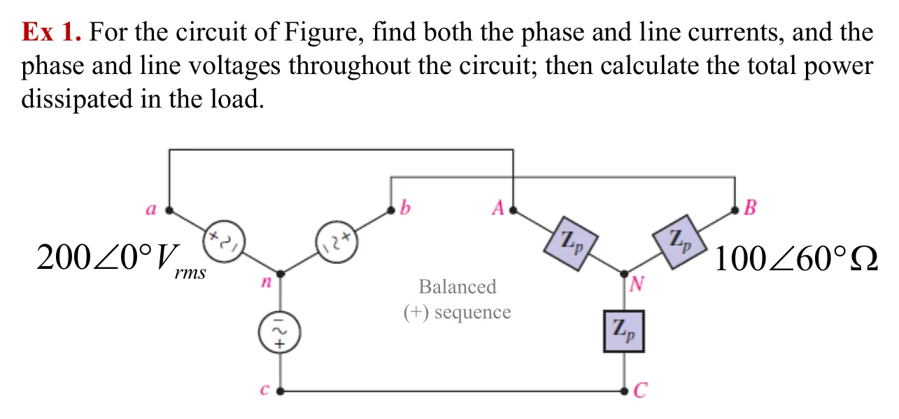
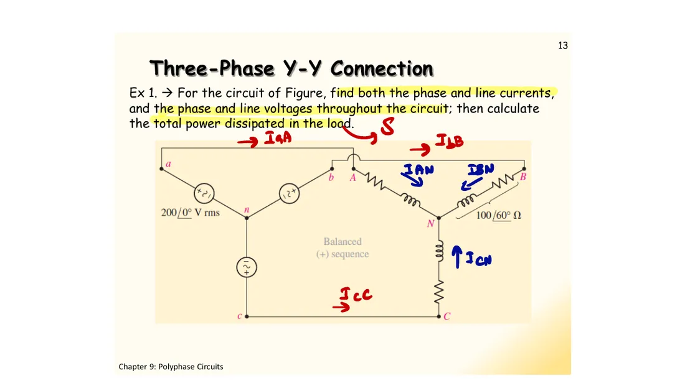
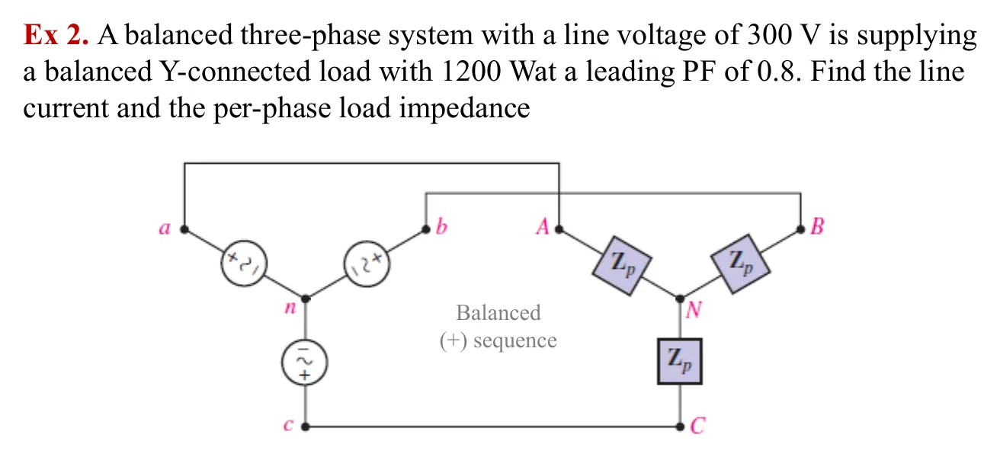
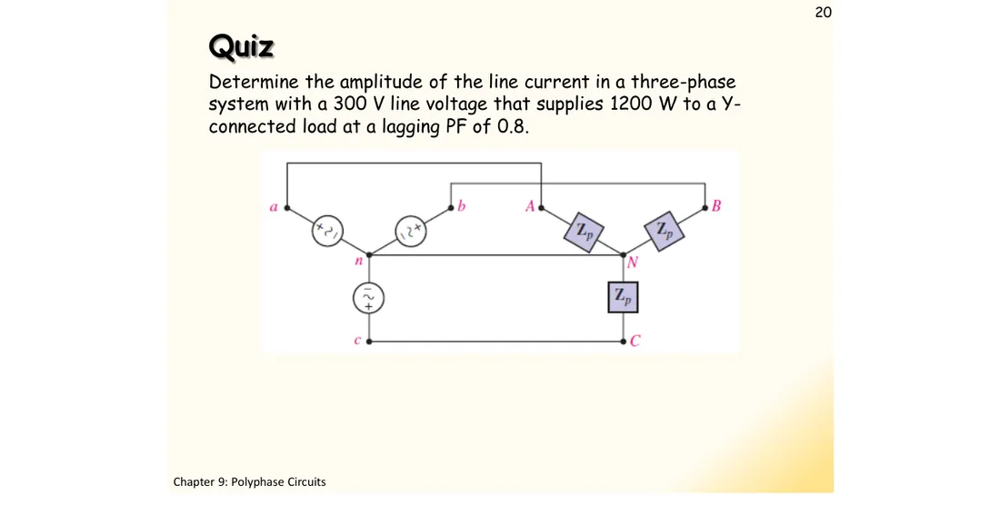

การต่อแบบวาย–วาย (Y–Y) The Y–Y connection — three single-phase circuits sharing one return lead
The Y–Y connection Three single-phase circuits sharing one return lead
เมื่อต่อโหลดวายที่สมดุล (อิมพีแดนซ์ \(Z_p\) เท่ากันทุกเฟส) เข้ากับแหล่งจ่ายวาย แต่ละเฟสคือวงจรเฟสเดียวที่มีแหล่งจ่าย \(\mathbf{V}_{an}\) กับอิมพีแดนซ์ \(Z_p\) สามวงใช้สายกลับร่วมกันหนึ่งเส้น คือสายนิวทรัล (สไลด์หน้า 11) สไลด์หน้า 12 สรุปว่ากระแสสายสามเส้นมีขนาดเท่ากันและห่างกัน 120° จึงรวมกันได้ศูนย์ สายนิวทรัลไม่มีกระแสเลย เราจึงคิดเพียงเฟสเดียวแล้วเลื่อนมุมไป −120° และ −240° ได้อีกสองเฟส Hayt เรียกว่าการวิเคราะห์ทีละเฟส (per-phase analysis) ในโหลดวาย กระแสเฟสกับกระแสสายคือกระแสเดียวกัน ส่วนแรงดันสายโตกว่าแรงดันเฟส \(\sqrt3\) เท่า หน้านี้มีโจทย์ Ex 1 สไลด์หน้า 13 (ข้อ 1) ภาพจำลองโหลดไม่สมดุลกับสายนิวทรัล (ส่วน A) ที่มาของกำลังรวมที่คงที่ (ส่วน B) โจทย์ Ex 2 สไลด์หน้า 14 (ข้อ 2) และแบบทดสอบปี 2560 (ข้อ 3)
When a balanced Y load (the same impedance \(Z_p\) in every phase) is connected to a Y source, each phase is a single-phase circuit, a source \(\mathbf{V}_{an}\) and an impedance \(Z_p\); the three circuits share one return lead, the neutral (slide p. 11). Slide p. 12 concludes that the three line currents have equal size, 120° apart, so they add to zero and the neutral carries no current at all. We therefore work out one phase only and shift the angle by −120° and −240° for the other two: Hayt calls this per-phase analysis. In a Y load the phase current and the line current are the same current, while the line voltage is \(\sqrt3\) times the phase voltage. This page has Ex 1 of slide p. 13 (problem 1), a simulation of an unbalanced load and the neutral (section A), where the constant total power comes from (section B), Ex 2 of slide p. 14 (problem 2) and the 2017 quiz (problem 3).
ประเด็นสำคัญของหน้านี้
- วิเคราะห์ทีละเฟส: \(\mathbf{I}_{aA} = \mathbf{V}_{an}/Z_p\) แล้ว \(\mathbf{I}_{bB}\), \(\mathbf{I}_{cC}\) ได้จากการเลื่อนมุม −120° และ −240° (ลำดับบวก) ไม่ต้องแก้สมการทั้งวงจร
- โหลดวาย: กระแสเฟส = กระแสสาย (\(\mathbf{I}_{AN} = \mathbf{I}_{aA}\)) แรงดันเฟสของโหลดเท่ากับ \(V_p\) และแรงดันสายเท่ากับ \(\sqrt3V_p\)
- โหลดสมดุล: \(\mathbf{I}_{Nn} = 0\) จะต่อหรือถอดสายนิวทรัลก็ได้ผลเท่าเดิม แต่โหลดไม่สมดุลจะมีกระแสในนิวทรัล และถ้าถอดนิวทรัล แรงดันของจุด N จะเลื่อนไป (ส่วน A)
- กำลังรวม \(P = 3V_pI_L\cos\theta\) โดย \(\theta\) คือมุมของ \(Z_p\) และกำลังรวมขณะใด ๆ ของระบบสามเฟสสมดุลคงที่ (ส่วน B) มอเตอร์สามเฟสจึงได้แรงบิดเรียบ
- รู้กำลัง \(P\) ตัวประกอบกำลัง (power factor, PF) และ \(V_L\) ก็หากระแสได้: \(V_p = V_L/\sqrt3\), \(P_p = P/3\), \(I_L = P_p/(V_p\cos\theta)\), \(|Z_p| = V_p/I_L\) (ข้อ 2 และ 3)
Key points of this page
- Per-phase analysis: \(\mathbf{I}_{aA} = \mathbf{V}_{an}/Z_p\), and \(\mathbf{I}_{bB}\), \(\mathbf{I}_{cC}\) follow by shifting the angle by −120° and −240° (positive sequence); no need to solve the whole circuit.
- Y load: phase current = line current (\(\mathbf{I}_{AN} = \mathbf{I}_{aA}\)); the load's phase voltage is \(V_p\) and the line voltage \(\sqrt3V_p\).
- Balanced load: \(\mathbf{I}_{Nn} = 0\), so connecting or removing the neutral changes nothing. An unbalanced load drives current in the neutral, and without the neutral the voltage of point N shifts (section A).
- Total power \(P = 3V_pI_L\cos\theta\) with \(\theta\) the angle of \(Z_p\), and the total instantaneous power of a balanced three-phase system is constant (section B), so a three-phase motor gets a smooth torque.
- From the power \(P\), the power factor (PF) and \(V_L\): \(V_p = V_L/\sqrt3\), \(P_p = P/3\), \(I_L = P_p/(V_p\cos\theta)\), \(|Z_p| = V_p/I_L\) (problems 2 and 3).
ดูสไลด์หน้า 11–12 ที่ผู้สอนเขียนในห้อง (ปี 2560)See slides pp. 11–12 as written in class (2017)
หากระแสเฟสและกระแสสาย แรงดันเฟสและแรงดันสายทั้งวงจร แล้วคำนวณกำลังรวมที่โหลดใช้
Find both the phase and line currents, and the phase and line voltages throughout the circuit; then calculate the total power dissipated in the load

แหล่งจ่าย \(200\angle 0^\circ\) V rms ลำดับบวก โหลด \(100\angle 60^\circ\ \Omega\) ทุกเฟส และมีสายนิวทรัล ภาพจำลองเปลี่ยนตามขั้นเหมือนเฉลยในห้อง: ระนาบแสดงแรงดันเฟสและแรงดันสายก่อน แล้วจุดเริ่มวิ่งเมื่อได้กระแส จุดในสายทั้งสามวิ่งสลับกันตามจังหวะที่ห่างกัน 120° แต่จุดในสายนิวทรัลไม่ขยับ เพราะกระแสสามเส้นต่อหัวต่อหางแล้วปิดพอดี ขั้นสุดท้ายกราฟแสดงกำลังขณะใด ๆ ของแต่ละเฟสที่แกว่ง แต่ผลรวม (เส้นขาว) นิ่งที่ 600 W
The source is \(200\angle 0^\circ\) V rms in positive sequence, every phase of the load is \(100\angle 60^\circ\ \Omega\), and there is a neutral. The simulation follows the steps of the class solution: the plane first shows the phase and line voltages, then the dots start once the currents are known. The dots in the three lines take turns, 120° apart, but the dots in the neutral do not move, because the three currents close head to tail. In the last step the graph shows the instantaneous power of each phase swinging while the total (white) stays at 600 W.
ดูวิธีทำที่ผู้สอนเขียนในห้อง (ปี 2560)See the solution written in class (2017)

![Handwritten solution of Ex 1: Ip = IAN, IBN, ICN; IL = IaA, IbB, IcC; Van, Vbn, Vcn are Vp and Vab, Vbc, Vca are VL; step 1, find all Vp and VL from the source side: Van = 200∠0 Vrms, Vbn = 200∠−120 Vrms, Vcn = 200∠120 Vrms, Vab = Van − Vbn = 200√3∠30, Vbc = Vbn − Vcn = 200√3∠−90, Vca = Vcn − Van = 200√3∠150; IAN = VAN/ZA = 200∠0/100∠60 = 2∠−60 Arms, IBN = 2∠−180 Arms, ICN = 2∠60 Arms; IaA = IAN, IbB = IBN, IcC = ICN; SA = VAN IAN* = (200∠0)(2∠60) = 400∠60 = 200 + 346.42j; 3S = SA + SB + SC = 1200∠60, ΣP = 600 Watt, ΣQ = 1039.23j VAR](slides/ch9/L09.webp)
โหลดไม่สมดุลและสายนิวทรัล
An unbalanced load and the neutral
วงจรเดียวกับข้อ 1 แต่สายนิวทรัลมีสวิตช์ (คลิกที่สวิตช์บนวงจร หรือใช้ปุ่มด้านข้าง) และเปลี่ยนโหลดเฟส C ได้ ค่าตั้งต้นคือ \(Z_C = 50\angle 60^\circ\ \Omega\) ต่อนิวทรัล: มีกระแส \(\mathbf{I}_{Nn}\) ไหลกลับทางนิวทรัล (เส้นขาวในระนาบ) แต่แรงดันทุกเฟสของโหลดยังเป็น 200 V ถอดนิวทรัล: กระแสต้องหาทางกลับผ่านเฟสอื่น จุด N เลื่อนไป (\(\mathbf{V}_{Nn} \ne 0\)) แรงดันที่โหลดแต่ละเฟสจึงไม่เท่ากัน เลือกกราฟกำลัง: โหลดสมดุลได้เส้นขาวนิ่ง แต่โหลดไม่สมดุลทำให้กำลังรวมแกว่ง
The circuit of problem 1, but the neutral has a switch (click the switch on the circuit, or use the buttons beside it) and the load of phase C can be changed. The default is \(Z_C = 50\angle 60^\circ\ \Omega\). With the neutral: a current \(\mathbf{I}_{Nn}\) returns through it (white in the plane), but every load phase still gets 200 V. Without the neutral: the current must return through the other phases, point N shifts (\(\mathbf{V}_{Nn} \ne 0\)) and the load phases no longer get equal voltages. Choose the power graph: a balanced load gives a steady white line, an unbalanced one makes the total power swing.
ทำไมกำลังรวมขณะใด ๆ จึงคงที่
Why the total instantaneous power is constant
เปิดทีละขั้นเพื่อดูว่ากำลังขณะใด ๆ ของสามเฟสในข้อ 1 รวมกันแล้วเหลือแต่ค่าคงที่ ใช้เอกลักษณ์ผลคูณเป็นผลต่างแบบเดียวกับหน้า 8.1 (อ้างอิงฟังก์ชันไซน์ ค่ายอด = ค่ายังผล × √2)
Open the steps to see the instantaneous powers of the three phases of problem 1 add up to a constant. It uses the same product-to-sum identity as page 8.1 (sine reference, peak = rms × √2).
หากระแสสายและอิมพีแดนซ์ต่อเฟสของโหลด
Find the line current and the per-phase load impedance

รู้กำลัง ตัวประกอบกำลัง และแรงดันสาย แต่ไม่รู้อิมพีแดนซ์ จึงเริ่มจากหนึ่งเฟส ภาพจำลองแสดงสามเหลี่ยมกำลังของหนึ่งเฟส \(\mathbf{S}_p = 400 - j300\) VA ซึ่งชี้ลงเพราะนำหน้า วงจรใช้อิมพีแดนซ์ที่คำนวณได้ (บนวงจรแสดงเป็น "? Ω" จนถึงขั้นที่หา) จุดจึงวิ่งด้วยกระแส 2.887 A พอดี และกราฟแสดงว่ายอดของ \(i_{AN}\) มาก่อน \(v_{AN}\) ลองตอบก่อน
The power, the power factor and the line voltage are known, but not the impedance, so start from one phase. The simulation shows the power triangle of one phase, \(\mathbf{S}_p = 400 - j300\) VA, pointing down because it is leading. The circuit uses the impedance found (shown as "? Ω" until the step that finds it), so its dots run with exactly 2.887 A, and the graph shows \(i_{AN}\) peaking before \(v_{AN}\). Try it first.
แบบทดสอบ: หาขนาดของกระแสสายเมื่อโหลดวายรับ 1200 W ที่ตัวประกอบกำลัง 0.8 ตามหลัง
Quiz: find the amplitude of the line current when a Y load takes 1200 W at a lagging PF of 0.8

โจทย์เดียวกับข้อ 2 แต่ตัวประกอบกำลังตามหลัง สามเหลี่ยมกำลังจึงชี้ขึ้น มุมของ \(Z_p\) เป็นบวก และยอดของ \(i_{AN}\) มาหลัง \(v_{AN}\) ขนาดของทุกค่าเท่าข้อ 2 ลองตอบก่อน ถ้าได้ 4.08 A ช่องตรวจจะบอกว่าพลาดตรงไหน
The same problem as problem 2, but the power factor is lagging: the power triangle points up, the angle of \(Z_p\) is positive and \(i_{AN}\) peaks after \(v_{AN}\). Every size is the same as in problem 2. Try it first; if you get 4.08 A, the check tells you where it went wrong.
ดูวิธีทำที่ผู้สอนเขียนในห้อง (ปี 2560)See the solution written in class (2017)
ฝึกเพิ่ม
More practice
ลองทำดู 1 — สายนิวทรัล
- ส่วน A เลือกโหลดสมดุล: ต่อหรือถอดสายนิวทรัล ทุกค่าเท่าเดิม และจุดในสายนิวทรัลไม่ขยับ (เหมือนข้อ 1)
- เลือก "Z_C = 50∠60° Ω" แล้วต่อสายนิวทรัล: \(\mathbf{I}_{Nn} = 2\angle 60^\circ\) A ไหลกลับทางนิวทรัล แต่แรงดันทุกเฟสยังเป็น 200 V
- ถอดสายนิวทรัล: จุด N เลื่อนไป แรงดันที่โหลดเฟสหนึ่งสูงเกิน 200 V อุปกรณ์ในบ้านที่ต่อเฟสนั้นอาจเสียหายได้ ระบบจำหน่ายไฟฟ้าจึงต้องมีนิวทรัล
ลองทำดู 2 — กำลังคงที่
- ข้อ 1 ขั้นสุดท้าย: แต่ละเฟสแกว่งระหว่าง −200 W ถึง 600 W แต่เส้นขาว (ผลรวม) นิ่งที่ 600 W
- ส่วน A เลือกโหลดไม่สมดุลและกราฟกำลัง: เส้นขาวเริ่มแกว่ง กำลังรวมคงที่เฉพาะระบบสมดุล
- คำถาม: ระบบเฟสเดียวจ่าย 600 W เฉลี่ยที่ตัวประกอบกำลัง 0.5 กำลังขณะใด ๆ ต่ำสุดเป็นเท่าใด
ลองทำดู 3 — ค่ายังผลหรือค่ายอด
- ข้อ 2 และ 3: \(I_L = 2.887\) A คิดโดยถือว่า 300 V เป็นค่ายังผล ตามเชิงอรรถของ Hayt และนิยาม \(V_p\) ในสไลด์หน้า 7
- เฉลยแบบทดสอบปี 2560 ได้ 4.08 A เพราะหาร 300 V ด้วย \(\sqrt2\) อีกครั้ง (ถือเป็นค่ายอด)
- ในระบบไฟฟ้ากำลัง "380 V" หรือ "300 V" หมายถึงค่ายังผลเสมอ ถ้าต้องการค่ายอดควรเขียนกำกับให้ชัด
Try this 1 — the neutral
- In section A choose the balanced load: connect or remove the neutral, every value stays the same and the neutral dots do not move (as in problem 1).
- Choose "Z_C = 50∠60° Ω" and connect the neutral: \(\mathbf{I}_{Nn} = 2\angle 60^\circ\) A returns through it, but every phase still gets 200 V.
- Remove the neutral: point N shifts and one load phase gets more than 200 V; household appliances on that phase may be damaged, which is why distribution systems need the neutral.
Try this 2 — constant power
- Problem 1, last step: each phase swings between −200 W and 600 W, yet the white total stays at 600 W.
- In section A choose an unbalanced load and the power graph: the white line starts to swing; the total is constant only for a balanced system.
- Question: a single-phase system delivers 600 W on average at a power factor of 0.5; what is the lowest instantaneous power?
Try this 3 — rms or peak?
- Problems 2 and 3: \(I_L = 2.887\) A takes 300 V as an rms value, as Hayt's footnote and the definition of \(V_p\) on slide p. 7 say.
- The 2017 quiz solution got 4.08 A by dividing 300 V by \(\sqrt2\) once more (taking it as a peak value).
- In power systems "380 V" or "300 V" always means rms; a peak value should be labelled clearly.